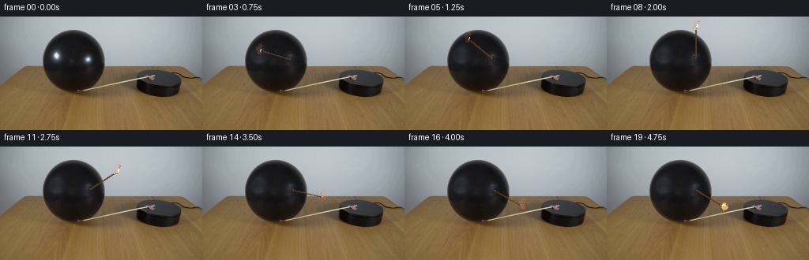
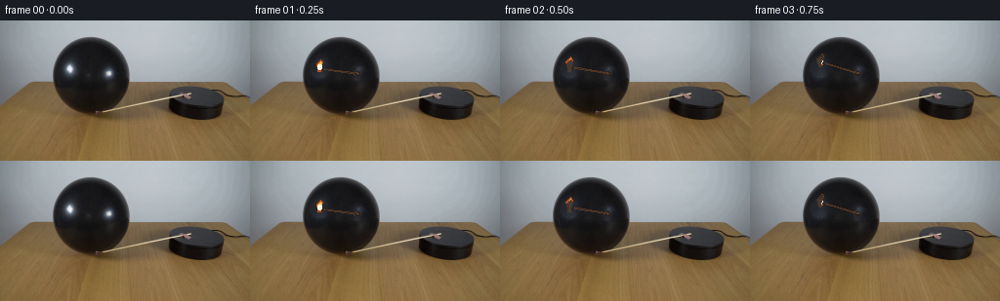
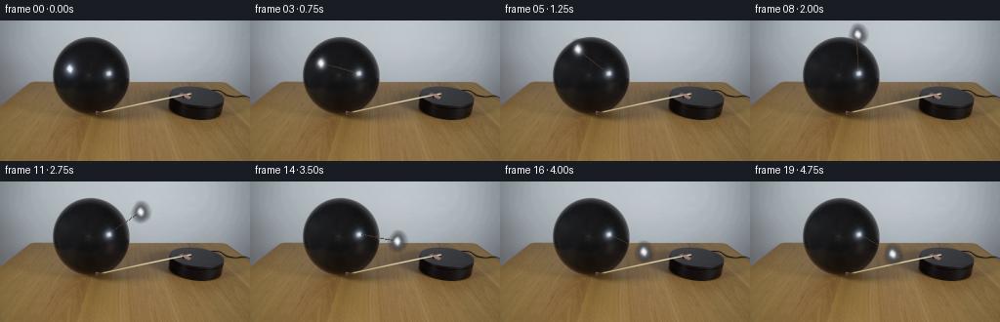
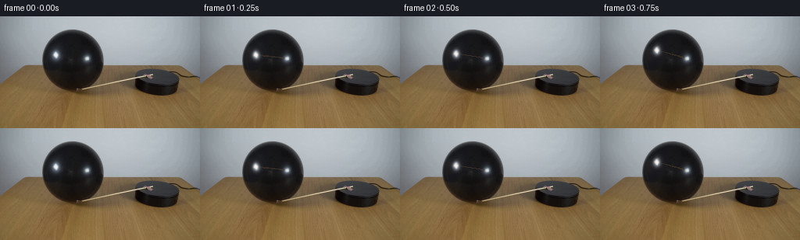

CODING AGENTS AS PIXEL WORLD MODELS
traex/DeepSeek-V4.1-Flash · 0113
点击播放 · 原生 RGB 像素
逐轮保存的候选
回放视频、检查图与代码变化。
每份候选均可单独播放。实际图片检查记录在下方工具轨迹中。
候选 01播放与检查图
点击播放 · 原生 RGB 像素


展开代码变化
--- 上一保存版本
+++ 本次保存版本
@@ -0,0 +1,247 @@
+from __future__ import annotations
+
+import math
+from pathlib import Path
+
+import cv2
+import numpy as np
+from PIL import Image, ImageDraw, ImageFilter
+
+import artifact_io
+
+
+CASE_DIR = Path(__file__).resolve().parent
+WIDTH = 256
+HEIGHT = 144
+FRAME_COUNT = 20
+FPS = 4
+
+# The match pivots at the dark, round attachment on the platform's front face.
+PIVOT = np.array([113.0, 55.0], dtype=np.float64)
+START_FLAME = np.array([71.2, 49.4], dtype=np.float64)
+CONTACT_FLAME = np.array([154.0, 80.0], dtype=np.float64)
+STICK_LENGTH = float(np.linalg.norm(START_FLAME - PIVOT))
+
+
+def smoothstep(value: float) -> float:
+ value = min(1.0, max(0.0, value))
+ return value * value * (3.0 - 2.0 * value)
+
+
+def build_background(source: np.ndarray) -> np.ndarray:
+ """Remove the visible match highlights from the still-life plate."""
+ mask = np.zeros((HEIGHT, WIDTH), dtype=np.uint8)
+ cv2.line(
+ mask,
+ tuple(np.round(PIVOT).astype(int)),
+ tuple(np.round(START_FLAME).astype(int)),
+ 255,
+ 7,
+ cv2.LINE_AA,
+ )
+ cv2.circle(mask, tuple(np.round(PIVOT).astype(int)), 5, 255, -1, cv2.LINE_AA)
+ cv2.circle(mask, tuple(np.round(START_FLAME).astype(int)), 7, 255, -1, cv2.LINE_AA)
+ clean = cv2.inpaint(source, mask, 3, cv2.INPAINT_TELEA)
+ return clean
+
+
+def flame_points(center: np.ndarray, angle: float, frame_index: int, contact: float) -> list[tuple[float, float]]:
+ """A small, vertically elongated flame with a gentle flicker."""
+ phase = frame_index * 2.15
+ sway = 0.8 * math.sin(phase) + 0.35 * math.sin(phase * 2.7 + 0.6)
+ vertical_scale = 1.0 + 0.08 * math.sin(phase * 1.7 + 0.3)
+ if contact > 0.0:
+ vertical_scale *= 1.0 - 0.25 * contact
+ tangent = np.array([-math.sin(angle), math.cos(angle)])
+ gravity = np.array([0.0, -1.0])
+ lean = 0.18 * tangent + gravity
+ lean /= max(1e-6, np.linalg.norm(lean))
+ side = np.array([-lean[1], lean[0]])
+ cx, cy = center
+
+ # Tip, shoulders, and a narrow blue-white root.
+ points = [
+ (cx + side[0] * (1.0 + sway * 0.35), cy + side[1] * (1.0 + sway * 0.35)),
+ (
+ cx + lean[0] * 7.2 * vertical_scale + side[0] * (3.2 + sway * 0.4),
+ cy + lean[1] * 7.2 * vertical_scale + side[1] * (3.2 + sway * 0.4),
+ ),
+ (
+ cx + lean[0] * 9.3 * vertical_scale + side[0] * (1.3 + sway * 0.3),
+ cy + lean[1] * 9.3 * vertical_scale + side[1] * (1.3 + sway * 0.3),
+ ),
+ (
+ cx + lean[0] * 5.0 * vertical_scale - side[0] * (3.4 - sway * 0.25),
+ cy + lean[1] * 5.0 * vertical_scale - side[1] * (3.4 - sway * 0.25),
+ ),
+ (
+ cx - lean[0] * (2.7 + contact * 1.8) - side[0] * 1.4,
+ cy - lean[1] * (2.7 + contact * 1.8) - side[1] * 1.4,
+ ),
+ (
+ cx - lean[0] * 2.8 + side[0] * 1.6,
+ cy - lean[1] * 2.8 + side[1] * 1.6,
+ ),
+ ]
+ return points
+
+
+def add_radial_glow(
+ overlay: np.ndarray,
+ alpha: np.ndarray,
+ center: tuple[float, float],
+ radius: float,
+ strength: float,
+ color: tuple[float, float, float],
+) -> None:
+ x0 = max(0, int(math.floor(center[0] - radius - 2)))
+ x1 = min(WIDTH, int(math.ceil(center[0] + radius + 2)))
+ y0 = max(0, int(math.floor(center[1] - radius - 2)))
+ y1 = min(HEIGHT, int(math.ceil(center[1] + radius + 2)))
+ if x0 >= x1 or y0 >= y1:
+ return
+ yy, xx = np.mgrid[y0:y1, x0:x1]
+ dist = np.sqrt((xx - center[0]) ** 2 + (yy - center[1]) ** 2)
+ falloff = np.clip(1.0 - dist / radius, 0.0, 1.0) ** 2.1
+ local = falloff * strength
+ overlay[y0:y1, x0:x1] += local[..., None] * np.asarray(color, dtype=np.float64)
+ alpha[y0:y1, x0:x1] = 1.0 - (1.0 - alpha[y0:y1, x0:x1]) * (1.0 - local * 0.62)
+
+
+def draw_match(frame: np.ndarray, angle: float, frame_index: int, contact: float) -> np.ndarray:
+ overlay = frame.astype(np.float64)
+ alpha = np.zeros((HEIGHT, WIDTH), dtype=np.float64)
+
+ direction = np.array([math.cos(angle), math.sin(angle)])
+ normal = np.array([-direction[1], direction[0]])
+ stick_tip = PIVOT + direction * (STICK_LENGTH - 5.0)
+ head_center = PIVOT + direction * 2.5
+ flame_center = PIVOT + direction * STICK_LENGTH
+
+ # Soft warm spill from the moving flame.
+ flicker = 0.94 + 0.06 * math.sin(frame_index * 2.3 + 0.4)
+ add_radial_glow(overlay, alpha, tuple(flame_center), 15.0, 0.20 * flicker, (1.0, 0.43, 0.10))
+ add_radial_glow(overlay, alpha, tuple(flame_center), 7.5, 0.16 * flicker, (1.0, 0.78, 0.42))
+
+ layer = Image.new("RGBA", (WIDTH, HEIGHT), (0, 0, 0, 0))
+ draw = ImageDraw.Draw(layer, "RGBA")
+
+ # A short, dark wooden shaft with a narrow highlight.
+ shaft_start = PIVOT + direction * 3.0
+ shaft_end = stick_tip
+ draw.line(
+ [tuple(shaft_start), tuple(shaft_end)],
+ fill=(63, 46, 31, 235),
+ width=2,
+ )
+ draw.line(
+ [tuple(shaft_start - normal * 0.45), tuple(shaft_end - normal * 0.45)],
+ fill=(119, 91, 60, 110),
+ width=1,
+ )
+
+ # Charred match head at the pivot and a glowing seam toward the flame.
+ hx, hy = head_center
+ draw.ellipse((hx - 2.3, hy - 2.0, hx + 2.3, hy + 2.0), fill=(43, 30, 23, 245))
+ draw.ellipse((hx - 1.2, hy - 1.1, hx + 0.5, hy + 0.6), fill=(117, 83, 58, 150))
+ draw.line([tuple(head_center), tuple(stick_tip)], fill=(94, 56, 32, 210), width=2)
+
+ # Flame body, painted in layers so it stays readable at this small resolution.
+ outer = flame_points(flame_center, angle, frame_index, contact)
+ draw.polygon(outer, fill=(226, 91, 25, 185))
+ inner_center = flame_center + np.array([0.0, -0.7])
+ inner = flame_points(inner_center, angle, frame_index, contact)
+ scaled_inner = []
+ for px, py in inner:
+ scaled_inner.append(
+ (
+ inner_center[0] + (px - inner_center[0]) * 0.68,
+ inner_center[1] + (py - inner_center[1]) * 0.73,
+ )
+ )
+ draw.polygon(scaled_inner, fill=(255, 193, 72, 235))
+
+ core_center = flame_center + np.array([0.0, -1.6])
+ draw.ellipse(
+ (
+ core_center[0] - 1.8,
+ core_center[1] - 2.5,
+ core_center[0] + 1.8,
+ core_center[1] + 2.2,
+ ),
+ fill=(255, 249, 224, 250),
+ )
+
+ # Slight motion trail, strongest during the fast part of the arc.
+ if contact < 0.2 and frame_index > 1:
+ trail_center = flame_center - np.array([math.cos(angle + math.pi / 2), math.sin(angle + math.pi / 2)]) * 1.8
+ trail = flame_points(trail_center, angle, frame_index - 1, contact)
+ draw.polygon(trail, fill=(255, 136, 41, 35))
+
+ # The last two frames hold a compact contact flare against the balloon.
+ if contact > 0.0:
+ cx, cy = flame_center
+ draw.ellipse(
+ (cx - 2.0 - 1.5 * contact, cy - 2.1, cx + 2.0 + 2.4 * contact, cy + 2.3),
+ fill=(255, 225, 145, int(105 + 80 * contact)),
+ )
+ draw.line(
+ [(cx + 1.5, cy - 0.5), (cx + 4.5 * contact, cy - 3.8 * contact)],
+ fill=(255, 207, 111, int(180 * contact)),
+ width=1,
+ )
+
+ layer_np = np.asarray(layer, dtype=np.float64)
+ layer_rgb = layer_np[..., :3]
+ layer_a = (layer_np[..., 3] / 255.0)[..., None]
+ # The overlay/glow is additive and the vector elements are alpha-composited.
+ glow_rgb = overlay - frame.astype(np.float64)
+ composed = frame.astype(np.float64) + glow_rgb
+ composed = composed * (1.0 - layer_a) + layer_rgb * layer_a
+ return np.clip(np.rint(composed), 0, 255).astype(np.uint8)
+
+
+def main() -> None:
+ source = np.asarray(Image.open(CASE_DIR / "first_frame.png").convert("RGB"), dtype=np.uint8)
+ if source.shape != (HEIGHT, WIDTH, 3):
+ raise ValueError(f"Unexpected first frame shape: {source.shape}")
+
+ background = build_background(source)
+ start_angle = math.atan2(START_FLAME[1] - PIVOT[1], START_FLAME[0] - PIVOT[0])
+ contact_angle = math.atan2(CONTACT_FLAME[1] - PIVOT[1], CONTACT_FLAME[0] - PIVOT[0])
+ if contact_angle <= start_angle:
+ contact_angle += 2.0 * math.pi
+ sweep = contact_angle - start_angle
+
+ frames = [source.copy()]
+ for index in range(1, FRAME_COUNT):
+ if index <= 17:
+ progress = smoothstep((index - 1) / 16.0)
+ angle = start_angle + sweep * progress
+ contact = 0.0
+ else:
+ # Preserve the physical contact and add only a small settling glow.
+ angle = contact_angle + 0.012 * (index - 17)
+ contact = 0.55 + 0.45 * (index - 17) / 2.0
+
+ if index == 17:
+ angle = contact_angle
+ contact = 0.55
+ if index == 18:
+ angle = contact_angle + 0.010
+ contact = 0.82
+ if index == 19:
+ angle = contact_angle + 0.018
+ contact = 1.0
+
+ frame = draw_match(background, angle, index, contact)
+ frames.append(frame)
+
+ frames = np.stack(frames, axis=0)
+ assert frames.shape == (FRAME_COUNT, HEIGHT, WIDTH, 3)
+ assert np.array_equal(frames[0], source)
+ artifact_io.save(frames, CASE_DIR)
+
+
+if __name__ == "__main__":
+ main()
候选 02播放与检查图
点击播放 · 原生 RGB 像素


展开代码变化
--- 上一保存版本
+++ 本次保存版本
@@ -16,10 +16,10 @@
FRAME_COUNT = 20
FPS = 4
-# The match pivots at the dark, round attachment on the platform's front face.
-PIVOT = np.array([113.0, 55.0], dtype=np.float64)
+# The bright round clip near (111, 54) is the fixed attachment on the platform.
+PIVOT = np.array([111.0, 54.0], dtype=np.float64)
START_FLAME = np.array([71.2, 49.4], dtype=np.float64)
-CONTACT_FLAME = np.array([154.0, 80.0], dtype=np.float64)
+CONTACT_FLAME = np.array([146.0, 73.0], dtype=np.float64)
STICK_LENGTH = float(np.linalg.norm(START_FLAME - PIVOT))
@@ -29,61 +29,41 @@
def build_background(source: np.ndarray) -> np.ndarray:
- """Remove the visible match highlights from the still-life plate."""
+ """Remove only the original flame; the fixed attachment clip stays intact."""
mask = np.zeros((HEIGHT, WIDTH), dtype=np.uint8)
- cv2.line(
+ cv2.ellipse(
mask,
- tuple(np.round(PIVOT).astype(int)),
tuple(np.round(START_FLAME).astype(int)),
+ (11, 13),
+ 0,
+ 0,
+ 360,
255,
- 7,
+ -1,
cv2.LINE_AA,
)
- cv2.circle(mask, tuple(np.round(PIVOT).astype(int)), 5, 255, -1, cv2.LINE_AA)
- cv2.circle(mask, tuple(np.round(START_FLAME).astype(int)), 7, 255, -1, cv2.LINE_AA)
clean = cv2.inpaint(source, mask, 3, cv2.INPAINT_TELEA)
return clean
-def flame_points(center: np.ndarray, angle: float, frame_index: int, contact: float) -> list[tuple[float, float]]:
- """A small, vertically elongated flame with a gentle flicker."""
- phase = frame_index * 2.15
- sway = 0.8 * math.sin(phase) + 0.35 * math.sin(phase * 2.7 + 0.6)
- vertical_scale = 1.0 + 0.08 * math.sin(phase * 1.7 + 0.3)
- if contact > 0.0:
- vertical_scale *= 1.0 - 0.25 * contact
- tangent = np.array([-math.sin(angle), math.cos(angle)])
- gravity = np.array([0.0, -1.0])
- lean = 0.18 * tangent + gravity
- lean /= max(1e-6, np.linalg.norm(lean))
- side = np.array([-lean[1], lean[0]])
- cx, cy = center
-
- # Tip, shoulders, and a narrow blue-white root.
- points = [
- (cx + side[0] * (1.0 + sway * 0.35), cy + side[1] * (1.0 + sway * 0.35)),
- (
- cx + lean[0] * 7.2 * vertical_scale + side[0] * (3.2 + sway * 0.4),
- cy + lean[1] * 7.2 * vertical_scale + side[1] * (3.2 + sway * 0.4),
- ),
- (
- cx + lean[0] * 9.3 * vertical_scale + side[0] * (1.3 + sway * 0.3),
- cy + lean[1] * 9.3 * vertical_scale + side[1] * (1.3 + sway * 0.3),
- ),
- (
- cx + lean[0] * 5.0 * vertical_scale - side[0] * (3.4 - sway * 0.25),
- cy + lean[1] * 5.0 * vertical_scale - side[1] * (3.4 - sway * 0.25),
- ),
- (
- cx - lean[0] * (2.7 + contact * 1.8) - side[0] * 1.4,
- cy - lean[1] * (2.7 + contact * 1.8) - side[1] * 1.4,
- ),
- (
- cx - lean[0] * 2.8 + side[0] * 1.6,
- cy - lean[1] * 2.8 + side[1] * 1.6,
- ),
- ]
- return points
+def build_flame_sprite(source: np.ndarray, background: np.ndarray) -> np.ndarray:
+ """Extract the source flame as a small premultiplied RGBA sprite."""
+ lum = source.astype(np.float64).mean(axis=2)
+ bg_lum = background.astype(np.float64).mean(axis=2)
+ excess = lum - bg_lum
+ alpha = np.clip((excess - 1.2) / 68.0, 0.0, 1.0) ** 0.68
+
+ yy, xx = np.mgrid[0:HEIGHT, 0:WIDTH]
+ spatial = np.sqrt((xx - START_FLAME[0]) ** 2 + (yy - START_FLAME[1]) ** 2)
+ alpha *= np.clip((12.5 - spatial) / 2.0, 0.0, 1.0)
+ alpha[alpha < 0.025] = 0.0
+
+ color = source.astype(np.float64).copy()
+ color[..., 0] = np.clip(color[..., 0] * 1.035 + 2.0, 0, 255)
+ color[..., 1] = np.clip(color[..., 1] * 1.005 + 0.5, 0, 255)
+ color[..., 2] = np.clip(color[..., 2] * 0.975, 0, 255)
+ rgba = np.dstack([color, alpha * 255.0]).astype(np.uint8)
+ return rgba
def add_radial_glow(
@@ -108,96 +88,81 @@
alpha[y0:y1, x0:x1] = 1.0 - (1.0 - alpha[y0:y1, x0:x1]) * (1.0 - local * 0.62)
-def draw_match(frame: np.ndarray, angle: float, frame_index: int, contact: float) -> np.ndarray:
+def draw_match(
+ frame: np.ndarray,
+ flame_sprite: np.ndarray,
+ angle: float,
+ frame_index: int,
+ contact: float,
+) -> np.ndarray:
overlay = frame.astype(np.float64)
alpha = np.zeros((HEIGHT, WIDTH), dtype=np.float64)
direction = np.array([math.cos(angle), math.sin(angle)])
normal = np.array([-direction[1], direction[0]])
- stick_tip = PIVOT + direction * (STICK_LENGTH - 5.0)
- head_center = PIVOT + direction * 2.5
+ stick_tip = PIVOT + direction * (STICK_LENGTH - 4.2)
flame_center = PIVOT + direction * STICK_LENGTH
- # Soft warm spill from the moving flame.
+ # Soft warm spill from the moving flame, restrained to match the source exposure.
flicker = 0.94 + 0.06 * math.sin(frame_index * 2.3 + 0.4)
- add_radial_glow(overlay, alpha, tuple(flame_center), 15.0, 0.20 * flicker, (1.0, 0.43, 0.10))
- add_radial_glow(overlay, alpha, tuple(flame_center), 7.5, 0.16 * flicker, (1.0, 0.78, 0.42))
+ add_radial_glow(overlay, alpha, tuple(flame_center), 13.5, 0.080 * flicker, (1.0, 0.47, 0.16))
+ add_radial_glow(overlay, alpha, tuple(flame_center), 7.0, 0.055 * flicker, (1.0, 0.77, 0.45))
layer = Image.new("RGBA", (WIDTH, HEIGHT), (0, 0, 0, 0))
draw = ImageDraw.Draw(layer, "RGBA")
- # A short, dark wooden shaft with a narrow highlight.
- shaft_start = PIVOT + direction * 3.0
+ # A dark wooden shaft with a narrow highlight, fixed to the unchanged metal clip.
+ shaft_start = PIVOT + direction * 4.0
shaft_end = stick_tip
draw.line(
[tuple(shaft_start), tuple(shaft_end)],
- fill=(63, 46, 31, 235),
- width=2,
+ fill=(58, 43, 31, 185),
+ width=1,
)
draw.line(
- [tuple(shaft_start - normal * 0.45), tuple(shaft_end - normal * 0.45)],
- fill=(119, 91, 60, 110),
+ [tuple(shaft_start - normal * 0.35), tuple(shaft_end - normal * 0.35)],
+ fill=(123, 94, 62, 80),
width=1,
)
- # Charred match head at the pivot and a glowing seam toward the flame.
- hx, hy = head_center
- draw.ellipse((hx - 2.3, hy - 2.0, hx + 2.3, hy + 2.0), fill=(43, 30, 23, 245))
- draw.ellipse((hx - 1.2, hy - 1.1, hx + 0.5, hy + 0.6), fill=(117, 83, 58, 150))
- draw.line([tuple(head_center), tuple(stick_tip)], fill=(94, 56, 32, 210), width=2)
-
- # Flame body, painted in layers so it stays readable at this small resolution.
- outer = flame_points(flame_center, angle, frame_index, contact)
- draw.polygon(outer, fill=(226, 91, 25, 185))
- inner_center = flame_center + np.array([0.0, -0.7])
- inner = flame_points(inner_center, angle, frame_index, contact)
- scaled_inner = []
- for px, py in inner:
- scaled_inner.append(
- (
- inner_center[0] + (px - inner_center[0]) * 0.68,
- inner_center[1] + (py - inner_center[1]) * 0.73,
- )
- )
- draw.polygon(scaled_inner, fill=(255, 193, 72, 235))
-
- core_center = flame_center + np.array([0.0, -1.6])
- draw.ellipse(
- (
- core_center[0] - 1.8,
- core_center[1] - 2.5,
- core_center[0] + 1.8,
- core_center[1] + 2.2,
- ),
- fill=(255, 249, 224, 250),
- )
-
- # Slight motion trail, strongest during the fast part of the arc.
- if contact < 0.2 and frame_index > 1:
- trail_center = flame_center - np.array([math.cos(angle + math.pi / 2), math.sin(angle + math.pi / 2)]) * 1.8
- trail = flame_points(trail_center, angle, frame_index - 1, contact)
- draw.polygon(trail, fill=(255, 136, 41, 35))
-
- # The last two frames hold a compact contact flare against the balloon.
+ # Keep the flame upright as the shaft turns. A tiny independent wobble supplies life.
+ rotation = 7.5 * math.sin(frame_index * 1.7 + 0.4)
if contact > 0.0:
- cx, cy = flame_center
+ rotation += 5.0 * contact
+ matrix = cv2.getRotationMatrix2D(tuple(START_FLAME), rotation, 1.0)
+ shift = flame_center - START_FLAME
+ matrix[:, 2] += shift
+ moved_sprite = cv2.warpAffine(
+ flame_sprite,
+ matrix,
+ (WIDTH, HEIGHT),
+ flags=cv2.INTER_LINEAR,
+ borderMode=cv2.BORDER_CONSTANT,
+ borderValue=(0, 0, 0, 0),
+ )
+ sprite_rgb = moved_sprite[..., :3].astype(np.float64)
+ sprite_a = (moved_sprite[..., 3] / 255.0)[..., None]
+
+ # The last three frames hold a compact contact flare against the balloon.
+ if contact > 0.0:
+ cx, cy = flame_center + np.array([4.5, 3.5])
draw.ellipse(
- (cx - 2.0 - 1.5 * contact, cy - 2.1, cx + 2.0 + 2.4 * contact, cy + 2.3),
- fill=(255, 225, 145, int(105 + 80 * contact)),
+ (cx - 1.2 - contact, cy - 1.2, cx + 1.2 + contact, cy + 1.2),
+ fill=(255, 218, 139, int(50 + 45 * contact)),
)
draw.line(
- [(cx + 1.5, cy - 0.5), (cx + 4.5 * contact, cy - 3.8 * contact)],
- fill=(255, 207, 111, int(180 * contact)),
+ [(cx, cy), (cx + 2.0 * contact, cy - 2.5 * contact)],
+ fill=(255, 210, 119, int(110 * contact)),
width=1,
)
layer_np = np.asarray(layer, dtype=np.float64)
layer_rgb = layer_np[..., :3]
layer_a = (layer_np[..., 3] / 255.0)[..., None]
- # The overlay/glow is additive and the vector elements are alpha-composited.
glow_rgb = overlay - frame.astype(np.float64)
composed = frame.astype(np.float64) + glow_rgb
composed = composed * (1.0 - layer_a) + layer_rgb * layer_a
+ composed = composed * (1.0 - sprite_a) + sprite_rgb * sprite_a
return np.clip(np.rint(composed), 0, 255).astype(np.uint8)
@@ -207,6 +172,7 @@
raise ValueError(f"Unexpected first frame shape: {source.shape}")
background = build_background(source)
+ flame_sprite = build_flame_sprite(source, background)
start_angle = math.atan2(START_FLAME[1] - PIVOT[1], START_FLAME[0] - PIVOT[0])
contact_angle = math.atan2(CONTACT_FLAME[1] - PIVOT[1], CONTACT_FLAME[0] - PIVOT[0])
if contact_angle <= start_angle:
@@ -215,26 +181,15 @@
frames = [source.copy()]
for index in range(1, FRAME_COUNT):
- if index <= 17:
+ if index <= 16:
progress = smoothstep((index - 1) / 16.0)
angle = start_angle + sweep * progress
contact = 0.0
else:
- # Preserve the physical contact and add only a small settling glow.
- angle = contact_angle + 0.012 * (index - 17)
- contact = 0.55 + 0.45 * (index - 17) / 2.0
-
- if index == 17:
- angle = contact_angle
- contact = 0.55
- if index == 18:
- angle = contact_angle + 0.010
- contact = 0.82
- if index == 19:
- angle = contact_angle + 0.018
- contact = 1.0
-
- frame = draw_match(background, angle, index, contact)
+ angle = contact_angle + 0.008 * (index - 16)
+ contact = 0.60 + 0.40 * (index - 16) / 3.0
+
+ frame = draw_match(background, flame_sprite, angle, index, contact)
frames.append(frame)
frames = np.stack(frames, axis=0)
可观测工具轨迹
实际执行的命令与返回图片。
命令 1exit 0
/bin/bash -c "pwd && rg --files -g '"'!*__pycache__*'"' | sort"
命令 2exit 0
/bin/bash -c "sed -n '1,240p' prompt.txt"
命令 3exit 0
/bin/bash -c "sed -n '1,260p' GENERATION_RULES.md"
命令 4exit 0
/bin/bash -c 'file first_frame.png && identify first_frame.png 2>/dev/null || true'
命令 5exit 0
/bin/bash -c "sed -n '1,260p' artifact_io.py"
命令 6exit 0
/bin/bash -c "sed -n '1,320p' player_template.html"
命令 7exit 0
/bin/bash -c "python - <<'PY'
from PIL import Image
import numpy as np
im=Image.open('first_frame.png').convert('RGB')
a=np.array(im)
print('size', im.size, 'mode', im.mode, 'dtype', a.dtype)
print('min/max/mean/std', a.min((0,1)), a.max((0,1)), a.mean((0,1)).round(2), a.std((0,1)).round(2))
# coarse 8x8 tiles average and basic unique color count
print('unique colors', len(np.unique(a.reshape(-1,3),axis=0)))
for y in range(0,144,16):
row=[]
for x in range(0,256,32):
t=a[y:y+16,x:x+32]
row.append('%02x%02x%02x'%tuple(t.mean((0,1)).astype(int)))
print(y, ' '.join(row))
PY"命令 8exit 0
/bin/bash -c "python - <<'PY'
from PIL import Image
import numpy as np
from sklearn.cluster import MiniBatchKMeans
im=np.array(Image.open('first_frame.png').convert('RGB'))
# sample all, kmeans 16
p=im.reshape(-1,3)
km=MiniBatchKMeans(16,random_state=0,n_init=5,batch_size=4096).fit(p)
c=km.cluster_centers_.round().astype(int)
n=np.bincount(km.labels_)
for i in np.argsort(n)[::-1]: print(f'{n[i]:6d} {n[i]/len(p):.3f} #{c[i,0]:02x}{c[i,1]:02x}{c[i,2]:02x} rgb{tuple(c[i])}')
PY"命令 9exit 0
/bin/bash -c "python - <<'PY'
from PIL import Image
import numpy as np
a=np.array(Image.open('first_frame.png').convert('RGB'))
# find dark pixels regions, print runs per row around platform and table
for y in [0,10,20,30,40,50,55,60,65,70,75,80,85,90,95,100,105,110,115,120,125,130,135,140,143]:
row=a[y]
dark=np.where(row.mean(1)<75)[0]
runs=[]
if len(dark):
s=p=dark[0]
for x in dark[1:]:
if x>p+1:runs.append((s,p));s=x
p=x
runs.append((s,p))
print(y, runs)
PY"命令 10exit 0
/bin/bash -c "python - <<'PY'
from PIL import Image
import numpy as np
a=np.array(Image.open('first_frame.png').convert('RGB')).astype(float)
g=a@np.array([.2126,.7152,.0722])
chars=' .:-=+*#%@'
# block average 2x2 and print every 2 rows
for y in range(0,144,2):
line=''
for x in range(0,256,2):
v=g[y:y+2,x:x+2].mean()
line += chars[min(9,int(v/256*10))]
print(f'{y:03d} {line}')
PY"命令 11exit 0
/bin/bash -c "python - <<'PY'
from PIL import Image
import numpy as np
a=np.array(Image.open('first_frame.png').convert('RGB'))
for y in range(0,144,8):
print('y',y, ' '.join('%3d'%int(a[y,x].mean()) for x in range(0,256,8)))
PY"命令 12exit 0
/bin/bash -c "python - <<'PY'
from PIL import Image
import numpy as np, colorsys
a=np.array(Image.open('first_frame.png').convert('RGB')).astype(float)
# print palette by coarse quant bins for platform region and balloon
for name,(x0,y0,x1,y1) in {'platform':(45,12,140,110),'balloon':(155,60,240,110),'table':(0,64,256,144),'wall':(0,0,256,60)}.items():
p=a[y0:y1,x0:x1].reshape(-1,3).astype(int)
q=(p//16)*16
u,c=np.unique(q,axis=0,return_counts=True)
inds=np.argsort(c)[::-1][:20]
print('\\n',name)
for i in inds: print(c[i], '#%02x%02x%02x'%tuple(u[i]))
PY"命令 13exit 0
/bin/bash -c "python - <<'PY'
from PIL import Image
import numpy as np
a=np.array(Image.open('first_frame.png').convert('RGB')).astype(int)
for boxname,(x0,y0,x1,y1) in {'platform':(45,10,145,115),'right':(150,55,245,115)}.items():
print('\\n',boxname)
for y in range(y0,y1,2):
row=''
for x in range(x0,x1,2):
p=a[y:y+2,x:x+2].mean((0,1)); v=p.mean()
if v<25: c=' '
elif v<50:c='.'
elif v<80:c=':'
elif v<110:c='-'
elif v<140:c='='
elif v<170:c='+'
elif v<200:c='*'
elif v<225:c='#'
else:c='@'
# orange bright flame
if p[0]>p[2]*2.0 and p[0]>100: c='F'
row+=c
print(f'{y:03d} {row}')
PY"命令 14exit 0
/bin/bash -c "python - <<'PY'
from PIL import Image
import numpy as np
a=np.array(Image.open('first_frame.png').convert('RGB')).astype(int)
# flame candidates using orange/yellow and brightness, print coordinates grouped by y
m=(a[:,:,0]>a[:,:,2]*1.6)&(a[:,:,0]>100)&(a[:,:,0]>a[:,:,1]*1.08)
ys,xs=np.where(m)
print('count',len(xs),'bbox', (xs.min(),ys.min(),xs.max(),ys.max()))
for y in range(ys.min(),ys.max()+1):
xx=np.where(m[y])[0]
if len(xx):
print(y, (xx.min(),xx.max()), len(xx), 'max',a[y,xx].max(0))
PY"命令 15exit 0
/bin/bash -c "python - <<'PY'
from PIL import Image
import numpy as np
a=np.array(Image.open('first_frame.png').convert('RGB')).astype(int)
for y in [40,42,44,46,48,50,52,54,56,58,60,62,64]:
print('\\ny',y)
for x in range(75,130,2):
p=a[y,x]
print(f'{x}:{p[0]:02x}{p[1]:02x}{p[2]:02x}',end=' ')
print()
PY"命令 16exit 0
/bin/bash -c "python - <<'PY'
from PIL import Image
import numpy as np
from scipy import ndimage
a=np.array(Image.open('first_frame.png').convert('RGB')).astype(float)
lum=a.mean(2)
# print bright components in platform x40:145,y10:105 threshold 110
m=(lum>110)
m[:10]=False;m[105:]=False;m[:,:40]=False;m[:,145:]=False
lab,n=ndimage.label(m)
for i in range(1,n+1):
ys,xs=np.where(lab==i)
if len(xs)>=3:
print(len(xs),(xs.min(),ys.min(),xs.max(),ys.max()),'mean',a[ys,xs].mean(0).round(1),'max',a[ys,xs].max(0))
# bright pixels location by rows > 130
print('bright>130')
for y in range(10,105):
xs=np.where(lum[y,40:145]>130)[0]+40
if len(xs):
print(y, xs.tolist())
PY"命令 17exit 0
/bin/bash -c "python - <<'PY'
from PIL import Image
import numpy as np
a=np.array(Image.open('first_frame.png').convert('RGB')).astype(int)
for y in range(40,68):
row=''
for x in range(60,130):
p=a[y,x]
if p.mean()>140: c='#'
elif p.mean()>100:c='*'
elif p.mean()>70:c='+'
elif p.mean()>40:c='.'
else:c=' '
row+=c
print(f'{y:02d} {row}')
print('colored candidates')
# hsv orange/yellow flame excluding wood by high saturation and brightness
import colorsys
for y in range(40,68):
xs=[]
for x in range(60,130):
r,g,b=a[y,x]/255
h,s,v=colorsys.rgb_to_hsv(r,g,b)
if s>.35 and v>.35 and (h<.17 or h>.95): xs.append(x)
if xs:print(y, min(xs),max(xs), [(x,tuple(a[y,x])) for x in xs])
PY"命令 18exit 0
/bin/bash -c "python - <<'PY'
from PIL import Image
import numpy as np
a=np.array(Image.open('first_frame.png').convert('RGB')).astype(int)
for y in range(42,61):
for x in range(60,130):
r,g,b=a[y,x]
if r>100 and r>g*1.03 and g>b*1.08:
print(y,x,(r,g,b))
PY"命令 19exit 0
/bin/bash -c "python - <<'PY'
from PIL import Image
import numpy as np
a=np.array(Image.open('first_frame.png').convert('RGB')).astype(float)
# avg color and max coordinate in boxes
for name,box in {'leftbright':(60,42,80,60),'midbright':(105,47,117,60),'rightdark':(170,70,230,100),'ballooncenter':(190,70,225,100),'platform':(60,20,120,60)}.items():
x0,y0,x1,y1=box;p=a[y0:y1,x0:x1]
print(name,'mean',p.mean((0,1)).round(1),'max',p.max((0,1)),'maxloc',np.unravel_index(np.argmax(p.mean(2)),p.shape[:2]))
# print box rgb rows as hex compressed
PY"命令 20exit 0
/bin/bash -c "python - <<'PY'
from PIL import Image
import numpy as np
a=np.array(Image.open('first_frame.png').convert('RGB')).astype(int)
for y in range(78,105):
xs=[]
for x in range(150,245):
r,g,b=a[y,x]
# balloon highlights low saturation and brightness >90, but restrict
if r>90 and abs(r-g)<35 and abs(g-b)<35:
xs.append(x)
if xs:print(y,min(xs),max(xs),[(x,tuple(a[y,x])) for x in xs])
PY"命令 21exit 0
/bin/bash -c "python - <<'PY'
from PIL import Image
import numpy as np
a=np.array(Image.open('first_frame.png').convert('RGB')).astype(float)
for y in range(0,144,3):
s=''
for x in range(0,256,3):
p=a[y:y+3,x:x+3].mean((0,1)); r,g,b=p; v=p.mean(); sat=p.max()-p.min()
if v>150: c='@'
elif v>115: c='#'
elif v>85: c='*'
elif v>60: c='+'
elif v>40: c='.'
elif v>25: c=','
else: c=' '
# color overrides
if r-b>18 and v>60: c='w' # wood
if abs(r-g)<12 and abs(g-b)<12 and v<60: c='B'
s+=c
print(f'{y:03d} {s}')
PY"命令 22exit 0
/bin/bash -c "python - <<'PY'
from PIL import Image
import numpy as np
a=np.array(Image.open('first_frame.png').convert('RGB')).astype(float)
for y in range(74,105):
row=''
for x in range(92,160):
r,g,b=a[y,x]; v=(r+g+b)/3
if v>190:c='@'
elif v>150:c='#'
elif v>115:c='*'
elif v>85:c='+'
elif v>60:c='.'
elif v>35:c=','
else:c=' '
row+=c
print(f'{y:03d} {row}')
PY"命令 23exit 0
/bin/bash -c "python - <<'PY'
from PIL import Image
import numpy as np
a=np.array(Image.open('first_frame.png').convert('RGB')).astype(float)
chars=' .:-=+*#%@'
for y in range(10,66):
row=''
for x in range(45,140):
p=a[y,x]; v=p.mean()
c=chars[min(9,int(v/256*10))]
row+=c
print(f'{y:03d} {row}')
PY"命令 24exit 0
/bin/bash -c "python - <<'PY'
from PIL import Image
import numpy as np
a=np.array(Image.open('first_frame.png').convert('RGB')).astype(int)
# top 30 unique bright colored pixels in platform
p=a[15:70,45:140].reshape(-1,3)
idx=np.argsort(p.mean(1))[::-1][:100]
for i in idx[:50]: print(tuple(p[i]), 'sum',p[i].sum(), 'diff',p[i].max()-p[i].min())
PY"命令 25exit 0
/bin/bash -c "python - <<'PY'
from PIL import Image
import numpy as np
a=np.array(Image.open('first_frame.png').convert('RGB')).astype(int)
# average coloredness in cells and print
for y in range(40,62,2):
row=''
for x in range(60,132,2):
p=a[y:y+2,x:x+2].mean((0,1)); v=p.mean(); sat=p.max()-p.min()
if v>100: c='@'
elif v>70:c='#'
elif v>45:c='+'
elif v>25:c='.'
else:c=' '
row+=c
print(f'{y:02d} {row}')
PY"命令 26exit 0
/bin/bash -c "python - <<'PY'
from PIL import Image
import numpy as np
a=np.array(Image.open('first_frame.png').convert('RGB')).astype(float)
for box in [(60,42,80,61),(104,46,119,60),(110,45,125,62)]:
x0,y0,x1,y1=box
print(box)
for y in range(y0,y1):
vals=[]
for x in range(x0,x1):
p=a[y,x]
if p.mean()>60: vals.append((x,p.mean(),p.max()-p.min()))
if vals: print(y, vals)
PY"命令 27exit 0
/bin/bash -c "python - <<'PY'
from PIL import Image
import numpy as np
a=np.array(Image.open('first_frame.png').convert('RGB')).astype(float)
# test edge/local background fill, show patches high contrast at 60..120 and 95..160
for box in [(55,35,125,68),(95,72,165,106),(155,62,235,108)]:
x0,y0,x1,y1=box
print('\\nbox',box)
for y in range(y0,y1,2):
row=''
for x in range(x0,x1,2):
p=a[y:y+2,x:x+2].mean((0,1)); v=p.mean()
if v>150:c='@'
elif v>115:c='#'
elif v>85:c='*'
elif v>60:c='+'
elif v>40:c='.'
elif v>25:c=','
else:c=' '
row+=c
print(f'{y:03d} {row}')
PY"命令 28exit 0
/bin/bash -c "python - <<'PY'
from PIL import Image
import numpy as np
from scipy.ndimage import gaussian_filter
a=np.array(Image.open('first_frame.png').convert('RGB')).astype(float)
# compute bg estimate using large blur; then residual significance for candidate masks
sm=gaussian_filter(a,(7,7,0))
res=np.linalg.norm(a-sm,axis=2)
print('res percentiles',np.percentile(res,[50,75,90,95,97,98,99,99.5,99.9]),res.max())
# candidate mask: high res or bright relative to surrounding
m=res>22
from scipy.ndimage import label
lab,n=label(m)
for i in range(1,n+1):
ys,xs=np.where(lab==i)
if len(xs)>10:
print(len(xs),(xs.min(),ys.min(),xs.max(),ys.max()), 'maxres',res[ys,xs].max())
PY"命令 29exit 0
/bin/bash -c "python - <<'PY'
from PIL import Image
import numpy as np
a=np.array(Image.open('first_frame.png').convert('RGB')).astype(float)
# print exact rgb around match head in hex by rows
for y in range(44,58):
print(y, ' '.join('%02x%02x%02x'%tuple(a[y,x].astype(int)) for x in range(66,78)))
PY"命令 30exit 0
/bin/bash -c "python - <<'PY'
from PIL import Image
import numpy as np
a=np.array(Image.open('first_frame.png').convert('RGB')).astype(float)
for y in range(48,64):
row=''
for x in range(100,125):
p=a[y,x];v=p.mean();r,g,b=p
if v>140:c='@'
elif v>100:c='#'
elif v>70:c='*'
elif v>50:c='+'
elif v>30:c='.'
else:c=' '
row+=c
print(f'{y} {row}')
PY"命令 31exit 0
/bin/bash -c "python - <<'PY'
from PIL import Image
import numpy as np
a=np.array(Image.open('first_frame.png').convert('RGB')).astype(float)
# print rows 70-104 x140-240 downsample with direct rgb characters, focusing black balloon and table line
for y in range(66,106,2):
row=''
for x in range(140,245,2):
p=a[y:y+2,x:x+2].mean((0,1)); v=p.mean();r,g,b=p
if v<22:c=' '
elif v<35:c='.'
elif v<50:c=','
elif v<65:c=':'
elif v<80:c='+'
elif v<100:c='*'
elif v<130:c='#'
elif v<170:c='%'
else:c='@'
row+=c
print(f'{y:03d} {row}')
PY"命令 32exit 0
/bin/bash -c "python - <<'PY'
from PIL import Image
import numpy as np
a=np.array(Image.open('first_frame.png').convert('RGB')).astype(float)
for boxname,(x0,y0,x1,y1) in {'head1':(65,42,80,59),'head2':(105,48,118,61)}.items():
p=a[y0:y1,x0:x1]
print(boxname,'mean bright',p[p.mean(2)>100].mean(0).round(1),'max',p.reshape(-1,3).max(0),'sat top')
vals=[]
for y in range(y0,y1):
for x in range(x0,x1):
q=a[y,x]
if q.mean()>80:
vals.append((int(q.max()-q.min()),x,y,tuple(q.astype(int))))
print(sorted(vals,reverse=True)[:10])
PY"命令 33exit 0
/bin/bash -c "python - <<'PY'
from PIL import Image
import numpy as np
a=np.array(Image.open('first_frame.png').convert('RGB')).astype(int)
for y in range(36,66):
row=''
for x in range(58,136):
r,g,b=a[y,x]
# letters for likely wood/warm dark, blue dark, neutral dark, bright
if r+g+b>180:c='@'
elif r+g+b>100:c='#'
elif r-b>10 and r>24:c='w'
elif b-r>5 and b>18:c='b'
elif r+g+b>65:c='+'
elif r+g+b>50:c='.'
else:c=' '
row+=c
print(f'{y:02d} {row}')
PY"命令 34exit 0
/bin/bash -c "python - <<'PY'
from PIL import Image
import numpy as np
a=np.array(Image.open('first_frame.png').convert('RGB')).astype(float)
# center of bright blobs by threshold within regions
for name,(x0,y0,x1,y1,thr) in {'head1':(60,38,84,62,110),'head2':(101,44,121,64,105),'balloonhi':(155,70,235,105,150)}.items():
p=a[y0:y1,x0:x1]; m=p.mean(2)>thr
ys,xs=np.where(m)
print(name,len(xs),'centroid', (xs.mean()+x0,ys.mean()+y0),'bbox',(xs.min()+x0,ys.min()+y0,xs.max()+x0,ys.max()+y0))
PY"命令 35exit 0
/bin/bash -c "python - <<'PY'
from PIL import Image
import numpy as np
a=np.array(Image.open('first_frame.png').convert('RGB')).astype(int)
# average 3x3 around head centers and background just around
for name,(x,y) in {'head1':(71,49),'head2':(111,54),'b1':(172,79),'b2':(197,83),'b3':(217,89)}.items():
p=a[y-1:y+2,x-1:x+2]
print(name,tuple(p.mean((0,1)).round().astype(int)), 'center',tuple(a[y,x]))
PY"命令 36exit 0
/bin/bash -c "python - <<'PY'
from PIL import Image
import numpy as np
a=np.array(Image.open('first_frame.png').convert('RGB')).astype(float)
# look for brown/orange pixels in platform inner region, thresholds flexible
for y in range(20,70):
xs=[]
for x in range(55,135):
r,g,b=a[y,x]
if r>80 and r>g+8 and g>b+10:
xs.append(x)
if xs: print(y, min(xs),max(xs),[(x,tuple(a[y,x].astype(int))) for x in xs[:20]])
PY"命令 37exit 0
/bin/bash -c "python - <<'PY'
from PIL import Image
import numpy as np
a=np.array(Image.open('first_frame.png').convert('RGB')).astype(int)
# row 52 colored values x95-125
for y in [51,52,53,54,55,56,57,58,59]:
print(y, [(x,tuple(a[y,x])) for x in range(100,122)])
PY"命令 38exit 0
/bin/bash -c "python - <<'PY'
from PIL import Image
import numpy as np
a=np.array(Image.open('first_frame.png').convert('RGB')).astype(float)
for y in [90,94,98,100,102,104,106,108,110,112,114,116,120,124,128,132,136,140,143]:
p=a[y].mean(1)
# derivative peaks abs
d=np.abs(np.diff(p)); inds=np.argsort(d)[::-1][:15]
print(y,sorted([(int(i),round(p[i],1),round(d[i],1)) for i in inds]))
PY"命令 39exit 0
/bin/bash -c "python - <<'PY'
from PIL import Image
import numpy as np
a=np.array(Image.open('first_frame.png').convert('RGB')).astype(float)
for y in [83,85,87,89,91,93,95,97,99,101,103]:
print('\\ny',y)
for x in range(155,235,2):
print(f'{x}:{a[y,x].mean():.0f}',end=' ')
print()
PY"命令 40exit 0
/bin/bash -c "python - <<'PY'
from PIL import Image
import numpy as np
a=np.array(Image.open('first_frame.png').convert('RGB')).astype(float)
# max values by x for each object to map highlights and dark structures
for x in range(0,256,4):
v=a[:,x].mean(1)
print(x, v.max().round(0), v.argmax(), round(v[80:104].mean(),1))
PY"命令 41exit 0
/bin/bash -c "python - <<'PY'
from PIL import Image
import numpy as np
a=np.array(Image.open('first_frame.png').convert('RGB')).astype(float)
# horizontal scan rows around balloon to find local low background dark boundary
for y in range(64,104,4):
row=a[y].mean(1)
# smooth and find minima under 40 in x145..240
x=np.arange(len(row)); sm=np.convolve(row,np.ones(3)/3,'same')
inds=[i for i in range(148,240) if sm[i]<45]
print(y, min(inds) if inds else None,max(inds) if inds else None)
PY"命令 42exit 0
/bin/bash -c "python - <<'PY'
from PIL import Image
import numpy as np
a=np.array(Image.open('first_frame.png').convert('RGB')).astype(float)
for y in [75,76,77,78,79,80,81,82,83,84,85,86,87,88,89,90,91,92,93,94,95,96,97,98,99,100,101]:
row=''
for x in range(155,236):
v=a[y,x].mean()
if v<20:c='@'
elif v<30:c='#'
elif v<45:c='*'
elif v<65:c='+'
elif v<85:c='.'
else:c=' '
row+=c
print(f'{y:03d} {row}')
PY"命令 43exit 0
/bin/bash -c "find . -maxdepth 3 -type f -printf '%p %s\\n' | sort && find .tmp -maxdepth 2 -type f -printf '%p %s\\n' 2>/dev/null | sort"
命令 44exit 0
/bin/bash -c "python - <<'PY'
from PIL import Image
import numpy as np
a=np.array(Image.open('first_frame.png').convert('RGB')).astype(float)
# average luminance by y for x bands
for x0,x1 in [(0,45),(45,140),(140,155),(155,230),(230,256)]:
print('band',x0,x1)
for y in range(0,144,4):
print(y, round(a[y:y+4,x0:x1].mean(),0), end='; ')
print()
PY"命令 45exit 0
/bin/bash -c "python - <<'PY'
from PIL import Image
import numpy as np
a=np.array(Image.open('first_frame.png').convert('RGB')).astype(float)
# print central rows x 40-160 downsampled every 2 pixels for plate / tabletop
for y in [59,60,61,62,63,64,65,66,67,68,69,70,71,72,73,74,75,76,77,78,79,80,81,82,83,84,85,86,87,88,89,90,91,92,93,94,95,96,97,98,99,100,101,102,103,104,105,106,107,108]:
print(f'{y:03d}',end=' ')
for x in range(40,161,4):
p=a[y:y+1,x:x+4].mean((0,1)); v=p.mean();r,g,b=p
if v>130:c='@'
elif v>105:c='#'
elif v>85:c='*'
elif v>65:c='+'
elif v>45:c='.'
elif v>30:c=','
else:c=' '
print(c,end='')
print()
PY"命令 46exit 0
/bin/bash -c "python - <<'PY'
from PIL import Image
import numpy as np
a=np.array(Image.open('first_frame.png').convert('RGB')).astype(int)
# print local median around match head and second head
for cy,cx in [(49,71),(54,111)]:
patch=a[cy-10:cy+11,cx-10:cx+11]
vals=patch.reshape(-1,3)
# remove top brightness 20%
m=vals.mean(1); bg=vals[m<np.percentile(m,60)]
print((cx,cy),'bg mean',bg.mean(0),'bg median',np.median(bg,0),'global local mean',patch.mean((0,1)))
PY"命令 47exit 0
/bin/bash -c "python - <<'PY'
from PIL import Image
import numpy as np
from scipy.ndimage import gaussian_filter
a=np.array(Image.open('first_frame.png').convert('RGB')).astype(float)
l=a.mean(2)
# coarse table rows and edges print 0-255 at y 65,70,75,80,85,90,95,100,105
for y in [65,70,75,80,85,90,95,100,105]:
print('\\ny',y)
for x in range(0,256,16): print(x,round(l[y,x],0),end='; ')
PY"命令 48exit 0
/bin/bash -c "python - <<'PY'
from PIL import Image
import numpy as np
a=np.array(Image.open('first_frame.png').convert('RGB')).astype(float)
for y in [54,55,56,57,58,59,60,61,62]:
print(y, ' '.join(f'{x}:{a[y,x].mean():.0f}' for x in range(100,122)))
PY"命令 49exit 0
/bin/bash -c "python - <<'PY'
from PIL import Image
import numpy as np
a=np.array(Image.open('first_frame.png').convert('RGB')).astype(float)
for y in range(52,70):
row=''
for x in range(110,155):
v=a[y,x].mean();r,g,b=a[y,x]
if v>130:c='@'
elif v>95:c='#'
elif v>70:c='*'
elif v>50:c='+'
elif v>35:c='.'
elif v>24:c=','
else:c=' '
row+=c
print(f'{y:02d} {row}')
PY"命令 50exit 0
/bin/bash -c "python - <<'PY'
from PIL import Image
import numpy as np
a=np.array(Image.open('first_frame.png').convert('RGB')).astype(float)
# count candidate saturated warm across platform region with lower thresholds
p=a[15:65,50:135]
mx=p.max(2); mn=p.min(2); sat=mx-mn; lum=p.mean(2)
for st in [15,20,25,30,35]:
m=(sat>st)&(p[:,:,0]>p[:,:,2]+st)&(lum>50)
print(st,m.sum())
ys,xs=np.where(m)
if len(xs): print(' bbox',(xs.min()+50,ys.min()+15,xs.max()+50,ys.max()+15))
# top saturation + lum candidates
vals=[]
for y in range(15,65):
for x in range(50,135):
q=a[y,x];vals.append((q.max()-q.min(),q.mean(),x,y,tuple(q.astype(int))))
for v in sorted(vals,reverse=True)[:30]: print(v)
PY"命令 51exit 0
/bin/bash -c "python - <<'PY'
from PIL import Image
import numpy as np
a=np.array(Image.open('first_frame.png').convert('RGB')).astype(float)
for y in range(60,104):
print(f'{y:03d}',end=' ')
for x in range(100,141,2):
p=a[y,x]; v=p.mean()
if v>90:c='@'
elif v>65:c='#'
elif v>45:c='*'
elif v>30:c='+'
elif v>20:c='.'
else:c=' '
print(c,end='')
print()
PY"命令 52exit 0
/bin/bash -c "python - <<'PY'
from PIL import Image
import numpy as np
a=np.array(Image.open('first_frame.png').convert('RGB')).astype(float)
for y in [75,80,85,90,95,100,103]:
print('\\ny',y)
for x in range(150,256,8):
p=a[y:y+1,x:x+8].mean((0,1))
print(f'{x}:({p[0]:.0f},{p[1]:.0f},{p[2]:.0f})',end=' ')
print()
PY"命令 53exit 0
/bin/bash -c "python - <<'PY'
from PIL import Image
import numpy as np
a=np.array(Image.open('first_frame.png').convert('RGB')).astype(float)
for y in range(76,92):
xs=[]
for x in range(140,235):
if a[y,x].mean()>140: xs.append(x)
if xs: print(y,min(xs),max(xs),xs)
PY"命令 54exit 0
/bin/bash -c "python - <<'PY'
from PIL import Image
import numpy as np
a=np.array(Image.open('first_frame.png').convert('RGB')).astype(float)
for y in range(84,102,2):
print(y, [(x, tuple(a[y,x].astype(int))) for x in range(150,231,10)])
PY"命令 55exit 0
/bin/bash -c "python - <<'PY'
from PIL import Image
import numpy as np
a=np.array(Image.open('first_frame.png').convert('RGB')).astype(float)
for y in range(82,102,2):
print(y, [(x,int(a[y,x].mean()),int(a[y,x].max()-a[y,x].min())) for x in range(145,235,4)])
PY"命令 56exit 0
/bin/bash -c "python - <<'PY'
from PIL import Image
import numpy as np
a=np.array(Image.open('first_frame.png').convert('RGB')).astype(float)
for y in range(76,102):
xs=[]
for x in range(150,230):
p=a[y,x]; r,g,b=p
# dark neutral balloon: brightness<70 and color spread <15
if p.mean()<70 and p.max()-p.min()<15: xs.append(x)
if xs:print(y,min(xs),max(xs))
PY"命令 57exit 0
/bin/bash -c "python - <<'PY'
from PIL import Image
import numpy as np
a=np.array(Image.open('first_frame.png').convert('RGB')).astype(float)
# edge profile of balloon by row, print approximate left and right from dark neutral mask threshold
for y in range(72,105):
xs=[]
for x in range(145,235):
p=a[y,x]; r,g,b=p
if p.mean()<72 and p.max()-p.min()<18: xs.append(x)
if xs: print(y,min(xs),max(xs))
PY"命令 58exit 0
/bin/bash -c "python - <<'PY'
try:
import cv2; print('cv2',cv2.__version__)
except Exception as e: print('no cv2',e)
try:
import scipy; print('scipy',scipy.__version__)
except Exception as e: print('no scipy',e)
try:
import imageio; print('imageio',imageio.__version__)
except Exception as e: print('no imageio',e)
PY"命令 59exit 0
/bin/bash -c "python - <<'PY'
from PIL import Image
import numpy as np
a=np.array(Image.open('first_frame.png').convert('RGB')).astype(float)
# saturation map for right balloon region rows with histogram
for y in range(76,102,2):
vals=[]
for x in range(150,235):
p=a[y,x];sat=p.max()-p.min()
if p.mean()>85 and sat<35: vals.append((x,int(p.mean()),int(sat)))
print(y,vals[:30])
PY"命令 60exit 0
/bin/bash -c "python - <<'PY'
from PIL import Image
import numpy as np
a=np.array(Image.open('first_frame.png').convert('RGB')).astype(float)
# pixel color distributions inside likely balloon mask vs nearby plate to infer object
mask=np.zeros((144,256),bool)
for y in range(74,102):
xs=[]
for x in range(145,235):
p=a[y,x]
if p.mean()<70 and p.max()-p.min()<18: xs.append(x)
if xs: mask[y,min(xs):max(xs)+1]=True
p=a[mask]
print('pixels',len(p),'mean',p.mean(0),'median',np.median(p,0),'percentiles',np.percentile(p.mean(1),[1,10,50,90,99]))
# unique values
vals,c=np.unique(p.astype(int),axis=0,return_counts=True)
for i in np.argsort(c)[::-1][:20]: print(c[i],vals[i])
PY"命令 61exit 0
/bin/bash -c "python - <<'PY'
from PIL import Image
import numpy as np
a=np.array(Image.open('first_frame.png').convert('RGB')).astype(float)
# visually infer platform black polygon via dark mask extents, table top boundary, balloon mask row extents
for y in range(12,70,2):
xs=[]
for x in range(40,145):
if a[y,x].mean()<100:xs.append(x)
print(y,(min(xs),max(xs)) if xs else None)
PY"命令 62exit 0
/bin/bash -c "python - <<'PY'
from PIL import Image
import numpy as np
a=np.array(Image.open('first_frame.png').convert('RGB')).astype(float)
# dark neutral mask for balloon row extents using threshold 80; print left/right local segments
for y in range(70,104,2):
row=a[y].mean(1)
m=(row<80)
# restrict 150..235 and runs >2
xs=np.where(m[145:235])[0]+145
runs=[]
if len(xs):
s=p=xs[0]
for x in xs[1:]:
if x>p+1:runs.append((s,p));s=x
p=x
runs.append((s,p))
print(y,runs)
PY"命令 63exit 0
/bin/bash -c "python - <<'PY'
from PIL import Image
import numpy as np
a=np.array(Image.open('first_frame.png').convert('RGB')).astype(float)
# estimate hue/sat for right balloon interior samples
for x,y in [(180,82),(190,84),(200,84),(210,84),(220,84),(190,90),(200,90),(210,90),(190,96),(200,96),(210,96),(200,100)]:
p=a[y,x]
print((x,y),tuple(p.astype(int)),'mean',p.mean(),'spread',p.max()-p.min())
PY"命令 64exit 0
/bin/bash -c "python - <<'PY'
from PIL import Image
import numpy as np
a=np.array(Image.open('first_frame.png').convert('RGB')).astype(float)
# At each y find upper outline of dark blob 160-235 where neutral dark
for y in range(60,105):
# consecutive run threshold 80 with max length and perhaps rightmost
xs=np.where(a[y].mean(1)[150:235]<85)[0]+150
# biggest run
runs=[]
if len(xs):
s=p=xs[0]
for x in xs[1:]:
if x>p+1:runs.append((s,p));s=x
p=x
runs.append((s,p))
runs=sorted(runs,key=lambda t:t[1]-t[0],reverse=True)
print(y,runs[:3])
PY"命令 65exit 0
/bin/bash -c "python - <<'PY'
from PIL import Image
import numpy as np
a=np.array(Image.open('first_frame.png').convert('RGB')).astype(float)
for y in range(100,144,4):
print(y,[(x,int(a[y,x].mean())) for x in range(40,145,8)])
PY"命令 66exit 0
/bin/bash -c "python - <<'PY'
from PIL import Image
import numpy as np
a=np.array(Image.open('first_frame.png').convert('RGB')).astype(float)
# print 2x2 average patch x50-140 y32-66 with luminance + color letters
for y in range(32,66,2):
row=''
for x in range(50,140,2):
p=a[y:y+2,x:x+2].mean((0,1)); v=p.mean(); r,g,b=p
if v>180:c='@'
elif v>140:c='#'
elif v>105:c='*'
elif v>75:c='+'
elif v>50:c='.'
elif v>30:c=','
else:c=' '
# warm pixels relative
if r-b>15 and v>40 and c in ' +.*#@': c='w'
row+=c
print(f'{y:02d} {row}')
PY"命令 67exit 0
/bin/bash -c "python - <<'PY'
from PIL import Image
import numpy as np
a=np.array(Image.open('first_frame.png').convert('RGB')).astype(float)
# brightest non-neutral objects inside stand; list bbox pixels with chroma>25 and lum>50
m=np.zeros((144,256),bool)
reg=a[15:65,50:140]; lum=reg.mean(2); chroma=reg.max(2)-reg.min(2)
sel=(chroma>24)&(lum>60)
ys,xs=np.where(sel)
print(len(xs))
from scipy.ndimage import label
lab,n=label(sel)
for i in range(1,n+1):
yy,xx=np.where(lab==i)
if len(xx)>2: print(len(xx),(xx.min()+50,yy.min()+15,xx.max()+50,yy.max()+15),a[yy+15,xx+50].mean(0))
PY"命令 68exit 0
/bin/bash -c "python - <<'PY'
from PIL import Image
import numpy as np
a=np.array(Image.open('first_frame.png').convert('RGB')).astype(float)
# centroid, extents of dark blob with connected component threshold under 85 in right region
import cv2
m=(a.mean(2)<85).astype(np.uint8)
m[:,:150]=0;m[:,240:]=0;m[:60]=0;m[108:]=0
n,lab,stats,cent=cv2.connectedComponentsWithStats(m,8)
for i in range(1,n):
x,y,w,h,area=stats[i]
if area>50: print(area,(x,y,w,h),cent[i])
PY"命令 69exit 0
/bin/bash -c "python - <<'PY'
from PIL import Image
import numpy as np
a=np.array(Image.open('first_frame.png').convert('RGB')).astype(float)
# print mask extents of connected dark component, for each row within comp
import cv2
m=(a.mean(2)<85).astype(np.uint8);m[:,:150]=0;m[:,240:]=0;m[:60]=0;m[108:]=0
n,lab,stats,cent=cv2.connectedComponentsWithStats(m,8)
i=1+np.argmax(stats[1:,4]); print(stats[i],cent[i])
for y in range(65,108):
xs=np.where(lab[y]==i)[0]
if len(xs):print(y,xs.min(),xs.max(),len(xs))
PY"命令 70exit 0
/bin/bash -c "python - <<'PY'
from PIL import Image
import numpy as np
a=np.array(Image.open('first_frame.png').convert('RGB')).astype(float)
# check exact line extents and candidate table foreground (bottom); maybe platform in upper left, balloon dark right
# sample stand top point / vertical shape
for x in [45,50,55,60,65,70,75,80,85,90,95,100,105,110,115,120,125,130,135,140,145]:
ys=np.where(a[:,x].mean(1)<60)[0]
ys=ys[(ys>=10)&(ys<110)]
print(x, (ys.min(),ys.max()) if len(ys) else None)
PY"命令 71exit 0
/bin/bash -c "python - <<'PY'
from PIL import Image
import numpy as np
a=np.array(Image.open('first_frame.png').convert('RGB')).astype(float)
# print regions of black platform in original 4x4 blocks binary dark<90 x45:140 y14:105
for y in range(14,104,2):
row=''
for x in range(45,140,2):
p=a[y:y+2,x:x+2].mean((0,1));v=p.mean()
if v<40:c='@'
elif v<65:c='#'
elif v<90:c='*'
elif v<120:c='+'
elif v<160:c='.'
else:c=' '
row+=c
print(f'{y:03d} {row}')
PY"命令 72exit 0
/bin/bash -c 'python generate.py'
命令 73exit 0
/bin/bash -c "python - <<'PY'
from PIL import Image
import numpy as np
from pathlib import Path
a=np.array(Image.open('first_frame.png').convert('RGB'))
b=np.array(Image.open('frames/00.png').convert('RGB'))
print('frame00 identical:',np.array_equal(a,b),'max diff',np.abs(a.astype(int)-b.astype(int)).max())
for i in [0,1,4,8,12,16,17,18,19]:
im=np.array(Image.open(f'frames/{i:02d}.png').convert('RGB'))
print(i,'mean',im.mean((0,1)).round(1),'std',im.std((0,1)).round(1),'dark%',(im.mean(2)<30).mean().round(3))
print('files')
for p in sorted(Path('.').glob('*')):
print(p.name,p.stat().st_size)
PY"命令 74exit 0
/bin/bash -c "python - <<'PY'
from PIL import Image
import numpy as np
im=Image.open('inspection.png')
print(im.size)
# crop sheet area image frames 4x2 for easier per-frame analysis
# identify differences and bbox each frame
base=np.array(Image.open('frames/00.png').convert('RGB')).astype(int)
for i in range(20):
a=np.array(Image.open(f'frames/{i:02d}.png').convert('RGB')).astype(int)
d=np.abs(a-base).max(2)
ys,xs=np.where(d>10)
print(i, len(xs), (xs.min(),ys.min(),xs.max(),ys.max()) if len(xs) else None, 'sumdiff',d.sum())
PY"命令 75exit 0
/bin/bash -c "python - <<'PY'
from PIL import Image
import numpy as np
chars=' .:-=+*#%@'
for i in [0,4,8,11,14,17,19]:
a=np.array(Image.open(f'frames/{i:02d}.png').convert('RGB')).astype(float)
print('\\nFRAME',i)
for y in range(0,104,4):
row=''
for x in range(48,168,2):
p=a[y:y+4,x:x+2].mean((0,1)); v=p.mean();r,g,b=p
c=chars[min(9,int(v/256*10))]
if r>g*1.15 and g>b*1.1 and r>70:c='F'
row+=c
print(f'{y:03d} {row}')
PY"命令 76exit 0
/bin/bash -c 'mkdir -p .tmp/candidate_v1 && cp -a frames index.html inspection.png transition_check.png pixels.npz generate.py .tmp/candidate_v1/'
命令 77exit 0
/bin/bash -c "python - <<'PY'
from PIL import Image
import numpy as np
# compact ascii of head region, all frames, only diff region x60-125 y35-65
for i in range(20):
a=np.array(Image.open(f'frames/{i:02d}.png').convert('RGB')).astype(float)
print('\\n',i)
for y in range(34,66,2):
row=''
for x in range(58,128,2):
p=a[y:y+2,x:x+2].mean((0,1));v=p.mean()
if v>170:c='@'
elif v>130:c='#'
elif v>95:c='*'
elif v>65:c='+'
elif v>40:c='.'
elif v>25:c=','
else:c=' '
row+=c
print(row)
PY"命令 78exit 0
/bin/bash -c "python - <<'PY'
from PIL import Image
import numpy as np
a=np.array(Image.open('frames/00.png').convert('RGB')).astype(float)
# line-based candidates: bright local residual (using blur) excluding second head region
from scipy.ndimage import gaussian_filter
r=a.mean(2)
sm=gaussian_filter(r,3)
res=r-sm
ys,xs=np.where(res>15)
print('res candidates in left platform x50-95 y35-65')
for y in range(35,66):
xx=np.where((res[y]>15)&(np.arange(256)>50)&(np.arange(256)<95))[0]
if len(xx):print(y,xx.tolist(),[(int(x),round(res[y,x],1)) for x in xx])
PY"命令 79exit 0
/bin/bash -c "python - <<'PY'
from PIL import Image
import numpy as np
from scipy.ndimage import gaussian_filter
a=np.array(Image.open('first_frame.png').convert('RGB')).astype(float)
r=a.mean(2); res=r-gaussian_filter(r,3)
for y in range(40,66):
xx=np.where((res[y]>8)&(np.arange(256)>52)&(np.arange(256)<112))[0]
# contiguous ranges
runs=[]
if len(xx):
s=p=xx[0]
for x in xx[1:]:
if x>p+1:runs.append((s,p));s=x
p=x
runs.append((s,p))
print(y,runs)
PY"命令 80exit 0
/bin/bash -c "python - <<'PY'
from PIL import Image
import numpy as np
from scipy.ndimage import gaussian_filter
a=np.array(Image.open('first_frame.png').convert('RGB')).astype(float)
r=a.mean(2); res=r-gaussian_filter(r,3)
for y in range(45,58):
print(y, [(x,round(res[y,x],1),int(r[y,x])) for x in range(84,98)])
PY"命令 81exit 0
/bin/bash -c "python - <<'PY'
from PIL import Image
import numpy as np
# locate warm bright pixels at frame 4/8 for flame and current match
for i in [0,1,4,8,12,16,17]:
a=np.array(Image.open(f'frames/{i:02d}.png').convert('RGB')).astype(float)
m=(a[:,:,0]>a[:,:,2]+30)&(a[:,:,0]>130)&(a[:,:,1]<210)
ys,xs=np.where(m)
print(i, len(xs), (xs.min(),ys.min(),xs.max(),ys.max()) if len(xs) else None)
PY"命令 82exit 0
/bin/bash -c "python - <<'PY'
from PIL import Image
import numpy as np
# use difference from original to isolate injected flame; report bright orange coordinates and centroids
base=np.array(Image.open('first_frame.png').convert('RGB')).astype(float)
for i in [1,4,8,12,16,17,19]:
a=np.array(Image.open(f'frames/{i:02d}.png').convert('RGB')).astype(float)
d=np.abs(a-base).max(2)
m=(d>8)&(a[:,:,0]>a[:,:,2]+25)&(a[:,:,0]>120)
ys,xs=np.where(m)
print(i,'n',len(xs),'centroid', (round(xs.mean(),1),round(ys.mean(),1)) if len(xs) else None,'bbox',(xs.min(),ys.min(),xs.max(),ys.max()) if len(xs) else None)
PY"命令 83exit 0
/bin/bash -c "python - <<'PY'
from PIL import Image
import numpy as np
for i in [0,1,4,8,12,16,17]:
a=np.array(Image.open(f'frames/{i:02d}.png').convert('RGB')).astype(float)
# heat-like saturated warm pixels in upper region x50:160 y0:65, avoid wood by require r>b+40 and r>100
p=a[:65,45:165]
m=(p[:,:,0]>p[:,:,2]+40)&(p[:,:,0]>100)&(p[:,:,1]>p[:,:,2]+15)
ys,xs=np.where(m)
print(i,len(xs), 'bbox', (xs.min()+45,ys.min(),xs.max()+45,ys.max()) if len(xs) else None)
PY"命令 84exit 0
/bin/bash -c "python - <<'PY'
from PIL import Image
import numpy as np
# crop contact frames and upscale nearest for direct visual inspection via color histogram
for i in [16,17,18,19]:
a=np.array(Image.open(f'frames/{i:02d}.png').convert('RGB'))
crop=a[65:92,140:170]
print('\\n',i)
for y in range(crop.shape[0]):
row=''
for x in range(crop.shape[1]):
p=crop[y,x]; v=p.mean();r,g,b=p
if r>g*1.2 and g>b*1.15 and r>100:c='F'
elif v>170:c='@'
elif v>130:c='#'
elif v>95:c='*'
elif v>65:c='+'
elif v>40:c='.'
elif v>24:c=','
else:c=' '
row+=c
print(row)
PY"命令 85exit 0
/bin/bash -c "python - <<'PY'
from PIL import Image
import numpy as np
a=np.array(Image.open('first_frame.png').convert('RGB')).astype(float)
# highlight match center/radius with threshold bright, excluding second head
for box in [(60,35,82,65),(100,45,120,65)]:
x0,y0,x1,y1=box
p=a[y0:y1,x0:x1]
for t in [90,120,150,180]:
ys,xs=np.where(p.mean(2)>t)
print(box,t,len(xs),(xs.mean()+x0,ys.mean()+y0),(xs.min()+x0,ys.min()+y0,xs.max()+x0,ys.max()+y0))
PY"命令 86exit 0
/bin/bash -c "python - <<'PY'
from PIL import Image
import numpy as np
a=np.array(Image.open('first_frame.png').convert('RGB')).astype(float)
# print difference of top object versus background rows to see possible thin stick between heads
# median brightness in x75:107 by row
for y in range(35,65):
p=a[y,78:107]; print(y,round(np.median(p.mean(1)),1),round(p.mean(),1),round(p.mean(1).max(),1),round(p.mean(1).min(),1))
PY"命令 87exit 0
/bin/bash -c "python - <<'PY'
from PIL import Image
import numpy as np
a=np.array(Image.open('first_frame.png').convert('RGB')).astype(float)
# inspect second head shape with hue/color spread and low threshold relative to local
for y in range(47,63):
row=''
for x in range(104,120):
p=a[y,x];v=p.mean();sat=p.max()-p.min()
if v>160:c='@'
elif v>125:c='#'
elif v>95:c='*'
elif v>70:c='+'
elif v>50:c='.'
elif v>35:c=','
else:c=' '
row+=c
print(f'{y} {row}')
PY"命令 88exit 0
/bin/bash -c "python - <<'PY'
from PIL import Image
import numpy as np
a=np.array(Image.open('first_frame.png').convert('RGB')).astype(float)
# report low-intensity structure (faint blob) between head regions at each row: max residual vs local ring
for y in range(36,64):
p=a[y,76:106].mean(1)
# local center max
i=p.argmax(); print(y,76+i,round(p[i],1), 'bgmed',round(np.median(p),1), 'minmax',round(p.min(),1))
PY"命令 89exit 0
/bin/bash -c "python - <<'PY'
from PIL import Image
import numpy as np
a=np.array(Image.open('first_frame.png').convert('RGB')).astype(float)
# print low-res patches 2x2 around object at 52,44..85,60 with exact max and mean
for y in range(36,66,2):
print(y,[(x,round(a[y:y+2,x:x+2].mean(),1)) for x in range(50,84,2)])
PY"命令 90exit 0
/bin/bash -c "python - <<'PY'
from PIL import Image
import numpy as np
a=np.array(Image.open('first_frame.png').convert('RGB')).astype(float)
# Look for thin stick line by comparing each pixel to vertically/horizontally interpolated background.
# print rows x76-106 as residual versus local vertical median
for y in range(38,62):
vals=[]
for x in range(77,106):
p=a[y,x].mean()
# baseline from y-4/y+4 same x
bg=(a[y-4,x].mean()+a[y+4,x].mean())/2
if p-bg>5: vals.append((x,round(p-bg,1),round(p,0)))
if vals: print(y,vals)
PY"命令 91exit 0
/bin/bash -c "python - <<'PY'
from PIL import Image
import numpy as np
a=np.array(Image.open('first_frame.png').convert('RGB')).astype(float)
# identify two bright blobs and low contrast area, print RGB stats row x85:105
for y in range(50,61):
print(y, [(x,tuple(a[y,x].astype(int))) for x in range(83,106)])
PY"命令 92exit 0
/bin/bash -c "python - <<'PY'
from PIL import Image
import numpy as np
# print row/col extents of bright structure frame 1 around head and flame
for i in [0,1,4]:
a=np.array(Image.open(f'frames/{i:02d}.png').convert('RGB')).astype(float)
m=(a[:,:,0]>150)&(a[:,:,0]>a[:,:,2]*1.3)
print('\\n',i)
for y in range(35,62):
xs=np.where(m[y,50:130])[0]+50
if len(xs): print(y,min(xs),max(xs),len(xs))
PY"命令 93exit 0
/bin/bash -c "python - <<'PY'
from PIL import Image
import numpy as np
from scipy.ndimage import gaussian_filter
a=np.array(Image.open('first_frame.png').convert('RGB')).astype(float)
# vertical profiles around x90-92 where tiny center line exists
for x in range(86,97):
print('x',x,[(y,int(a[y,x].mean())) for y in range(50,62)])
PY"命令 94exit 0
/bin/bash -c "python - <<'PY'
from PIL import Image
import numpy as np
a=np.array(Image.open('first_frame.png').convert('RGB')).astype(float)
# find bright maxima in head1 and head2 and estimate shape extents via 5% of max
for cx,cy in [(71,49),(111,54)]:
p=a[cy-8:cy+9,cx-8:cx+9].mean(2)
mx=p.max()
for frac in [.1,.2,.3,.5,.7]:
ys,xs=np.where(p>mx*frac)
print((cx,cy),frac,len(xs),(xs.min()+cx-8,ys.min()+cy-8,xs.max()+cx-8,ys.max()+cy-8))
PY"命令 95exit 0
/bin/bash -c "python - <<'PY'
from PIL import Image
import numpy as np
a=np.array(Image.open('first_frame.png').convert('RGB')).astype(float)
# Render high-res ASCII of tiny residual at x80..108 y45..62 to see rod
for y in range(44,63):
print(f'{y:02d}',end=' ')
for x in range(78,110):
v=a[y,x].mean()
if v<22:c=' '
elif v<26:c='.'
elif v<30:c=','
elif v<35:c=':'
elif v<40:c='+'
elif v<50:c='*'
elif v<70:c='#'
else:c='@'
print(c,end='')
print()
PY"命令 96exit 0
/bin/bash -c "python - <<'PY'
from PIL import Image
import numpy as np
a=np.array(Image.open('first_frame.png').convert('RGB')).astype(float)
# find fine line between blobs in grayscale residual from median local background, output coords where contrast moderate
for y in range(50,62):
vals=[]
for x in range(78,105):
p=a[y,x].mean()
bg=np.median(a[max(0,y-5):min(144,y+6),max(0,x-3):min(256,x+4)].mean(2))
d=p-bg
if d>3: vals.append((x,round(d,1),round(p,0)))
print(y,vals)
PY"命令 97exit 0
/bin/bash -c "python - <<'PY'
from PIL import Image
import numpy as np
# inspect raw image metadata and maybe EXIF/text
im=Image.open('first_frame.png')
print(im.info)
print(im.getexif())
PY"命令 98exit 0
/bin/bash -c "python - <<'PY'
from PIL import Image
import numpy as np
# print a large representation at 4x nearest into .tmp to inspect if possible via saved crop stats; not visual
# analyze exact geometry via source image content: perhaps first frame is generated 3D; use edge map on platform
import cv2
a=np.array(Image.open('first_frame.png').convert('RGB'))
g=cv2.cvtColor(a,cv2.COLOR_RGB2GRAY)
e=cv2.Canny(g,30,80)
for y in range(15,110,5):
xs=np.where(e[y,40:145]>0)[0]+40
print(y,xs.tolist())
PY"命令 99exit 0
/bin/bash -c "python - <<'PY'
from PIL import Image
import numpy as np
# inspect image at 8x pixel scale for left head, print RGB hex grid with centers
a=np.array(Image.open('first_frame.png').convert('RGB'))
for y in range(40,61):
print(y,' '.join('%02x%02x%02x'%tuple(a[y,x]) for x in range(64,80)))
PY"命令 100exit 0
/bin/bash -c "sed -n '1,260p' generate.py"
命令 101exit 0
/bin/bash -c "cat prompt.txt && printf '\\n--- RULES ---\\n' && cat GENERATION_RULES.md"
命令 102exit 0
/bin/bash -c "git status --short && find . -maxdepth 2 -type f -printf '%p %s bytes\\n' | sort | head -100"
命令 103exit 0
/bin/bash -c 'python generate.py'
命令 104exit 0
/bin/bash -c "python - <<'PY'
from pathlib import Path
from PIL import Image
import numpy as np, cv2
import generate
src=np.array(Image.open('first_frame.png').convert('RGB'))
bg=generate.build_background(src)
sprite=generate.build_flame_sprite(src,bg)
a=sprite[...,3]
ys,xs=np.where(a>0)
print('first frame equals 00:', np.array_equal(src,np.array(Image.open('frames/00.png').convert('RGB'))))
print('sprite alpha bbox:', (xs.min(),ys.min(),xs.max(),ys.max()), 'nonzero',len(xs))
for t in [1,10,25,50,100,150,200,250]:
m=a>=t
if m.any():
ys,xs=np.where(m); print(f' alpha>={t:3}: bbox {xs.min()},{ys.min()}..{xs.max()},{ys.max()} count {m.sum()}')
for i in range(20):
im=np.array(Image.open(f'frames/{i:02d}.png').convert('RGB')).astype(np.int16)
d=np.abs(im-src).max(2)
ys,xs=np.where(d>3)
if len(xs): print(f'{i:02d}: diff>3 bbox {xs.min():3},{ys.min():3}..{xs.max():3},{ys.max():3} n={len(xs):4} mean={d[d>3].mean():.1f}')
else: print(f'{i:02d}: identical')
PY"命令 105exit 0
/bin/bash -c "python - <<'PY'
from PIL import Image
import numpy as np
src=np.array(Image.open('first_frame.png').convert('RGB'))
# Sample along and around pivot-to-flame segment. Print RGB and local mean brightness.
p=np.array([111.,54.]); f=np.array([71.2,49.4])
for t in np.linspace(0,1,21):
x,y=np.rint(p*(1-t)+f*t).astype(int)
print(f't={t:4.2f} xy=({x:3},{y:3}) rgb={tuple(src[y,x])} gray={src[y,x].mean():5.1f}')
print('\\nHorizontal strips around shaft:')
for y in range(44,62):
row=[]
for x in range(58,116,2):
rgb=src[y,x]; g=rgb.mean()
# rough class
if g>210 and rgb[0]>rgb[2]*1.15: c='F' # flame white/yellow
elif g>150 and rgb[0]>rgb[2]*1.10: c='f' # orange/yellow
elif g<65: c='#' # near black
elif rgb[0]>rgb[2]*1.35 and rgb[0]>75: c='w' # wood
elif g<105: c='d'
else: c='.'
row.append(c)
print(f'{y:3}: '+''.join(row))
print(' '+''.join(str((x//10)%10) for x in range(58,116,2)))
PY"命令 106exit 0
/bin/bash -c 'command -v chafa || true; command -v viu || true; command -v jp2 || true; command -v img2txt || true; command -v viu || true'
命令 107exit 0
/bin/bash -c "python - <<'PY' from PIL import Image import numpy as np for name in ['first_frame.png','inspection.png','transition_check.png']: im=Image.open(name) print(name, im.size, im.mode) PY"
命令 108exit 0
/bin/bash -c "sed -n '1,260p' artifact_io.py"
命令 109exit 0
/bin/bash -c "python - <<'PY'
from PIL import Image
import numpy as np
src=np.array(Image.open('first_frame.png').convert('RGB'))
# classify every pixel near left platform (50:118, 30:72)
def cl(rgb):
r,g,b=rgb; v=rgb.mean()
if v>200 and r>b*1.05: return 'F'
if v>140 and r>b*1.08: return 'f'
if v<40: return '#'
if v<75: return '+'
if r>b*1.35 and r>75: return 'w'
if v<130: return '.'
return ' '
for y in range(28,73):
line=''.join(cl(src[y,x]) for x in range(50,120))
print(f'{y:3} {line}')
print(' '+''.join(str((x//10)%10) for x in range(50,120)))
PY"命令 110exit 0
/bin/bash -c 'mkdir -p .tmp/revision_v2 && cp frames/*.png .tmp/revision_v2/ && cp generate.py .tmp/revision_v2/generate.py'
命令 111exit 0
/bin/bash -c "python - <<'PY'
from PIL import Image
import numpy as np
src=np.array(Image.open('first_frame.png').convert('RGB'))
# inspect balloon and contact region luminance classes
for y in range(55,91):
line=''
for x in range(128,176):
r,g,b=src[y,x]; v=src[y,x].mean()
if v>210: c='@'
elif v>150: c='O'
elif v>100: c='o'
elif v>65: c='.'
elif v>40: c=','
elif v>22: c=':'
else: c='#'
line+=c
print(f'{y:3} {line}')
print(' '+''.join(str((x//10)%10) for x in range(128,176)))
PY"命令 112exit 0
/bin/bash -c "python - <<'PY'
from PIL import Image
import numpy as np
for idx in [0,4,8,12,16,19]:
a=np.array(Image.open(f'frames/{idx:02d}.png').convert('RGB'))
# list brightest pixels (hot flame core) around relevant upper-left/contact regions
lum=a.mean(2)
mask=(lum>215)&(a[...,0]>a[...,2]*1.03)
ys,xs=np.where(mask)
print('\\nframe',idx,'bright count',len(xs),'bbox', (xs.min(),ys.min(),xs.max(),ys.max()) if len(xs) else None)
# flame colored hotspot bbox in 40..180 x 0..100
sel=(xs<180)&(ys<100)&(xs>35)
print(' region bbox', (xs[sel].min(),ys[sel].min(),xs[sel].max(),ys[sel].max()) if sel.any() else None, 'n',sel.sum())
PY"命令 113exit 0
/bin/bash -c "python - <<'PY'
from PIL import Image, ImageOps, ImageFilter
import numpy as np
im=Image.open('first_frame.png').convert('L').resize((128,72), Image.Resampling.BOX)
a=np.array(im)
chars='@%#*+=-:. '
for y,row in enumerate(a):
print(''.join(chars[min(9,int(v)*10//256)] for v in row))
PY"命令 114exit 0
/bin/bash -c "python - <<'PY'
from PIL import Image
import numpy as np
src=np.array(Image.open('first_frame.png').convert('RGB'))
# print exact RGBA-ish hues in flame bbox
for y in range(34,65):
line=''
for x in range(55,90):
r,g,b=map(int,src[y,x]); v=(r+g+b)/3
if v>230: c='@'
elif v>190: c='O'
elif v>150: c='o'
elif r>b*1.5 and v>80: c='y'
elif v>80: c='+'
elif v>50: c='.'
elif v>30: c=','
elif v>15: c=':'
else: c=' '
line+=c
print(f'{y:3} {line}')
print(' '+''.join(str((x//10)%10) for x in range(55,90)))
PY"命令 115exit 0
/bin/bash -c "python - <<'PY'
from PIL import Image
import numpy as np
for idx in [0,1,4,8,12,16,19]:
a=np.array(Image.open(f'frames/{idx:02d}.png').convert('RGB')).astype(int)
# top hot connected components of flame pixels around expected moving object, exclude balloon
# Flame color score: brightness and warm dominance. Print bbox of very bright non-neutral/warm pixels.
yy,xx=np.mgrid[:144,:256]
reg=(xx<170)&(yy<100)&(xx>45)
r,g,b=[a[...,i] for i in range(3)]
m=reg&(r>210)&(g>120)&(b<200)
ys,xs=np.where(m)
print(idx, 'warm bright n',len(xs),'bbox', (xs.min(),ys.min(),xs.max(),ys.max()) if len(xs) else None)
PY"命令 116exit 0
/bin/bash -c "python - <<'PY'
from PIL import Image
import numpy as np
for idx in [0,1,4,8,12,16,19]:
a=np.array(Image.open(f'frames/{idx:02d}.png').convert('RGB')).astype(float)
yy,xx=np.mgrid[:144,:256]
reg=(xx<170)&(yy<100)&(xx>45)&~((xx>130)&(yy>60)) # exclude balloon-ish
r,g,b=[a[...,i] for i in range(3)]
# source flame color doesn't have strong warmth, but hottest core is bright
m=reg&(a.mean(2)>205)
ys,xs=np.where(m)
print(idx, 'bright n',len(xs),'bbox', (xs.min(),ys.min(),xs.max(),ys.max()) if len(xs) else None)
PY"命令 117exit 0
/bin/bash -c "python - <<'PY'
from PIL import Image
import numpy as np
src=np.array(Image.open('first_frame.png').convert('RGB')).astype(float)
# compute a base using a smoothed version or fill; inspect flame detection stats
bg=src.copy()
# compare source to a 5x5 median to find bright small feature
med=np.zeros_like(src)
import cv2
for c in range(3): med[...,c]=cv2.medianBlur(src[...,c].astype(np.uint8), 11)
d=(src-med).mean(2)
for y in range(34,64):
line=''
for x in range(56,89):
v=d[y,x]
if v>100:c='@'
elif v>60:c='O'
elif v>30:c='o'
elif v>15:c='+'
elif v>7:c='.'
elif v>2:c=','
else:c=' '
line+=c
print(f'{y:3} {line}')
PY"命令 118exit 0
/bin/bash -c "python - <<'PY'
from PIL import Image
import numpy as np
src=np.array(Image.open('first_frame.png').convert('RGB')).astype(int)
# Show small crop with exact colors / delta from platform region, using rows 42-62 and x64-116
# grayscale values
for y in range(42,63):
vals=[]
for x in range(64,117,2):
v=src[y,x].mean()
vals.append(f'{int(v):02x}')
print(f'{y:3} '+''.join(vals))
print(' '+''.join(f'{x:02x}'[-2:] for x in range(64,117,2)))
PY"命令 119exit 0
/bin/bash -c "python - <<'PY'
from PIL import Image
import numpy as np
for idx in [0,1,5,10,15,19]:
a=np.array(Image.open(f'frames/{idx:02d}.png').convert('RGB')).astype(int)
# inspect shaft region near pivot
print('\\nframe',idx)
for y in range(46,61):
vals=[]
for x in range(100,116,2):
v=a[y,x].mean(); vals.append(f'{int(v):3d}')
print(y,' '.join(vals))
PY"命令 120exit 0
/bin/bash -c "python - <<'PY'
from PIL import Image
import numpy as np
src=np.array(Image.open('first_frame.png').convert('RGB')).astype(np.int16)
prev=src
for i in range(1,20):
cur=np.array(Image.open(f'frames/{i:02d}.png').convert('RGB')).astype(np.int16)
d=np.abs(cur-prev)
print(f'{i:02d}: changed={np.any(d>0,2).sum():4d} meanabs={d.mean():.3f} p99={np.percentile(d,99):.1f} max={d.max()}')
prev=cur
PY"命令 121exit 0
/bin/bash -c "python - <<'PY'
from PIL import Image
import numpy as np
import generate
src=np.array(Image.open('first_frame.png').convert('RGB'))
bg=generate.build_background(src)
d=(src.astype(float)-bg.astype(float)).mean(2)
for y in range(32,68):
line=''
for x in range(54,92):
v=d[y,x]
if v>80:c='@'
elif v>40:c='O'
elif v>20:c='o'
elif v>8:c='+'
elif v>3:c='.'
elif v<-8:c='x'
else:c=' '
line+=c
print(f'{y:3} {line}')
print(' '+''.join(str((x//10)%10) for x in range(54,92)))
# residual bright in bg around source flame excluding clip
lum=bg.mean(2)
ys,xs=np.where((lum>150)&(np.mgrid[:144,:256][1]>=58)&(np.mgrid[:144,:256][1]<=85)&(np.mgrid[:144,:256][0]>=35)&(np.mgrid[:144,:256][0]<=65))
print('bg bright pixels', len(xs), (xs.min(),ys.min(),xs.max(),ys.max()) if len(xs) else None)
PY"命令 122exit 0
/bin/bash -c "python - <<'PY'
from PIL import Image
import numpy as np
for idx in [1,2,4,8,12,16,17,18,19]:
a=np.array(Image.open(f'frames/{idx:02d}.png').convert('RGB')).astype(int)
# count pixels differing from source in source-flame region (x58:86 y34:64)
d=np.abs(a-np.array(Image.open('first_frame.png').convert('RGB')).astype(int)).max(2)
reg=d[34:64,58:86]
print(idx,'old flame region changed',np.sum(reg>0),'max',reg.max())
PY"命令 123exit 0
/bin/bash -c "python - <<'PY'
from PIL import Image
import numpy as np
src=np.array(Image.open('first_frame.png').convert('RGB'))
# Determine whether flame is attached to clip: scan bright orange/warm shape and clip
# print source crop in base64? no. Calculate hue stats in flame and clip
for name,(x0,x1,y0,y1) in {'flame':(63,82,38,60),'shaft':(82,108,50,57),'clip':(103,115,48,59)}.items():
a=src[y0:y1,x0:x1].reshape(-1,3).astype(float)
print(name,'mean',a.mean(0),'max',a.max(0),'p95 lum',np.percentile(a.mean(1),95))
PY"命令 124exit 0
/bin/bash -c "python - <<'PY'
from PIL import Image
import numpy as np
import generate
src=np.array(Image.open('first_frame.png').convert('RGB'))
bg=generate.build_background(src)
sprite=generate.build_flame_sprite(src,bg)
a=sprite[...,3]/255
for y in range(36,63):
line=''
for x in range(59,87):
v=a[y,x]
if v>.9:c='@'
elif v>.65:c='O'
elif v>.4:c='o'
elif v>.2:c='+'
elif v>.07:c='.'
elif v>0:c=','
else:c=' '
line+=c
print(f'{y:3} {line}')
PY"命令 125exit 0
/bin/bash -c "python - <<'PY'
from PIL import Image
import numpy as np
src=np.array(Image.open('first_frame.png').convert('RGB')).astype(int)
# print HSV-ish stats per row in flame bbox, and colors at representative points
for y in range(42,58):
x=range(62,83)
v=src[y,62:83]
print(y,'mean',v.mean(0).round(1),'max',v.max(0),'warmmax', (v[:,0]-v[:,2]).max())
print('core colors')
for xy in [(71,49),(71,47),(68,48),(74,50),(66,50),(78,52),(70,57)]:
x,y=xy; print(xy,src[y,x])
PY"保存候选 2 份；完成命令 125 次；可验证图片返回 0 张。原始 API 响应与完整日志保留在本地。